정보통신산업기사 (2006-03-05 기출문제)
1과목: 디지털전자회로
1. LC 동조 발진기에 비해 수정 발진기의 특징으로 잘못 설명한 것은?
- 안정도가 높다.
- Q가 비교적 크다.
- 발진 주파수를 가변하기 어렵다.
- 저주파 발진기로 적합하다.
(정답률: 알수없음)

2. 전압이득이 50인 저주파 증폭기가 약10[%] 정도의 왜율을 가지고 있다. 이를2[%] 정도로 개선하기 위하여 걸어 주어야 하는 부궤환율 β은 얼마 이어야 하는가?
- 10
- 4
- 0.02
- 0.08
(정답률: 알수없음)
3. 다음 회로에서 R =1[㏁], R =4[㏁]일 때 전압증폭도 A는 얼마나 되는가? (단, 연산증폭기는 이상적이다.)
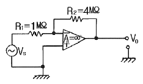
- -1
- -2
- -3
- -4
(정답률: 알수없음)
4. J-K 플립플롭에서 Jn = 0, Kn = 1일 때 클록펄스가 1 상태라면 Qn+1 의 출력상태는?
- 부정
- 0
- 1
- 반전
(정답률: 알수없음)
5. 그림과 같은 에미터 저항을 가진 CE 증폭기에서 에미터 저항 RE의 가장 중요한 역할은 무엇인가?
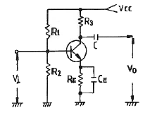
- S(안정계수)를 감소시켜 동작점이 안정된다.
- 주파수 대역을 증가시킨다.
- 바이어스 전압을 감소시킨다.
- 증폭회로의 출력을 증가시킨다.
(정답률: 40%)
6. JK 플립플롭을 이용하여 D형 플립플롭을 만들려면?
- J의 입력을 인버터를 통해 K에 연결한다.
- J와 K를 동일 입력으로 한다.
- Q의 입력을 J에 궤환시킨다.
- K의 입력을 J에 궤환시킨다.
(정답률: 알수없음)
7. 토글 플립플롭(Toggle-F/F)을 2단 직렬 연결한 후 입력에 4[㎑] 펄스를 인가하면 출력은?
- 16[㎑]
- 8[㎑]
- 2[㎑]
- 1[㎑]
(정답률: 알수없음)
8. 슈미트 트리거(Schmitt trigger) 회로의 용도 설명중 틀린 것은?
- 구형파펄스 발생 회로로 사용된다.
- 임의의 파형에서 그 크기에 해당하는 펄스폭의 구형파를 얻기 위해서 사용된다.
- A-D 변환회로로 사용된다.
- D-A 변환회로로 사용된다.
(정답률: 알수없음)
9. 다음 중 디지털변조방식에 속하지 않는 것은?
- 위상변조(PM)
- 펄스부호변조(PCM)
- 적응델타변조(ADM)
- 차분펄스부호변조(DPCM)
(정답률: 알수없음)
10. 다음 불 대수의 정리 중 옳지 않은 것은?
- A + B = B + A
- A + B · C = (A + B)(A + C)
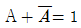
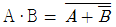
(정답률: 55%)
11. D 플립-플롭을 이용하여 그림과 같은회로를 구성하고, 클럭(clk) 단자에 5[㎑] 클럭 펄스를 인가하였다. 동작 시작단계에서 Q출력을 +5[㎑]로 하였다면 출력은?
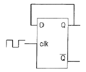
- 10[㎑]
- 2.5[㎑]
- 5[㎑]
- 5[V] DC
(정답률: 알수없음)
12. 전가산기의 출력(S : 합, Co : 캐리출력)에서 S=Co 가 되기 위한 입력 A, B, Ci(캐리입력) 조건은?
- A=0, B=0, Ci=1 또는 A=1, B=1, Ci=1
- A=0, B=0, Ci=0 또는 A=1, B=1, Ci=1
- A=1, B=1, Ci=0 또는 A=1, B=1, Ci=1
- A=0, B=0, Ci=0 또는 A=0, B=0, Ci=1
(정답률: 알수없음)
13. 실리콘 제어정류소자(SCR)의 전류-전압 특성곡선은?
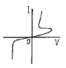
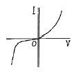
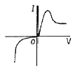
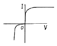
(정답률: 알수없음)
14. 반송파전압 eS =EScos(wSt+θ)를 신호전압 ec=Eccos wct로 진폭변조시 피변조파의 상측파대의 진폭은? (단, ma : 변조도)
- WC + WS
- (ma·EC) / 2
- WC - WS
- ma ㆍ EC
(정답률: 알수없음)
15. 에미터 접지 트랜지스터에서 동작점의 안정화를 위한 대책을 가장 적절하게 설명한 것은?
- 동작점의 베이스전류 I8만 일정하게 한다.
- 전류 이득 β가 일정하게 한다.
- 동작점의 IC의 VCE의 값을 일정하게 한 다.
- 역포화 전류 ICO가 일정한 값을 갖도록 한다.
(정답률: 알수없음)
16. 다음 논리식 중 좌우 항의 관계가 틀린 것은?
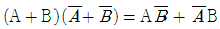
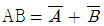
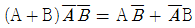
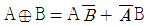
(정답률: 알수없음)
17. 결합상태가 DC(직류)로 구성된 멀티바이브레이터는?
- 무안정 멀티바이브레이터
- 단안정 멀티바이브레이터
- 쌍안정 멀티바이브레이터
- 무단안정 멀티바이브레이터
(정답률: 알수없음)
18. 다음 중 LC발진기에서 일어나는현상이 아닌 것은?
- 인입현상
- 기생진동
- 자외선현상
- Blocking 발진
(정답률: 60%)
19. 그림에서 병렬공진회로의 공진주파수가 5[㎒]이다. 입력주파수가 5[㎒]일 때 콜렉터 전류는?
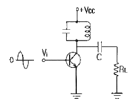
- 증가한다.
- 감소한다.
- 최대가 된다.
- 최소가 된다.
(정답률: 알수없음)
20. 그림과 같은 전파정류회로의 각 다이오드에 걸리는 최대 역전압의 크기는 약 얼마인가? (단, 100V 는 상용전압이고, n1=n2 이다.)
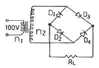
- 100[V]
- 141[V]
- 230[V]
- 282[V]
(정답률: 알수없음)
2과목: 정보통신기기
21. 다음 중 DSU(Digital Service Unit)의 특징이 아닌것은?
- 비용이 모뎀보다 저렴하다
- 클럭 추출회로가 없다.
- 루프 시험기능이 있다.
- 오류제거가 쉽다.
(정답률: 알수없음)
22. 다음 중 FM송신기와 관계 없는 것은?
- 주파수 체배회로
- 위상변조회로
- 리액턴스 변조관
- 주파수 변별회로
(정답률: 알수없음)
23. 다음 중 장거리 전송을 위해 신호를 재생중계해서 선로를 결합해주는 기능을 제공하는 장치는?
- 모뎀
- 허브
- 리피터
- 라우터
(정답률: 알수없음)
24. 다음 이동통신 시스템중에서 핸드오프(Hand-off)기능을 수행하는 것은?
- 이동국(Mobile Station)
- 중계기(Repeater)
- 데이터 센터(Data Center)
- 이동전화교환국( Mobile Switching Center)
(정답률: 알수없음)
25. 다음 네트워크 형태 중 통신회선의 설치비용이 가장 작게 드는 것은?
- 멀티드롭형
- 스타형
- 메쉬형
- 포인트-투-포인트형
(정답률: 알수없음)
26. 정보통신기기들 사이에 기계적. 전기적. 기능적. 절차적인 여러 조건을 약속하여 표준화 한 것을 무엇이라 하는가?
- 토플로지
- 아키텍쳐
- 인터페이스
- 창조모형
(정답률: 알수없음)
27. 일반적인 무선 송신기의 구성으로 필수적인 사항이 아닌 것은?
- 전원부
- 겸파부
- 발진부
- 변조부
(정답률: 80%)
28. 다기능전화기에 대한 설명으로서 옳지 않은 것은?
- 수 회선 이내의 국선이나 구내교환기의 내선을 여러대의 내선 전화로 사용할 수 있는 전화기다.
- 어떤 전화회선에 대하여 어떤 내선전화기로부터의 발신. 응답 및 보류가 가능하다.
- 내선전화기상호간에 통화가 가능하도록해준다.
- 데이터 단말 접속이 가능하고 중계선번호 통지기능이 있다.
(정답률: 알수없음)
29. 다음 중 쌍방향 CATV의 응용분야가 아닌 것은?
- TV회의
- 자동검참
- 홈뱅킹
- 문서의 전송
(정답률: 알수없음)
30. 다음은 집중화기에 대한 설명이다. 집중화기에 대한 설명으로 틀린 것은/?
- 입력회선 m은 출력회선 n보다 작아야 한다.
- 단말회선 제어기, 중앙처리장치, 다수 선로 제어기 등으로 구성된다.
- 집중화기는 데이터가 있는 단말 장치에만 시간폭을 할당 할수 있다.
- 단말회선 제어기는 동기식 비동기식 모두 가능하지만 일반적으로 비동기로 사용한다.
(정답률: 알수없음)
31. 데이터 저장의 신뢰도를 높이기 위한 디스크 운용 방법 중에 가장 경제적인 방법은?
- 이러링(mirroring)
- 이중화(duplex)
- 중복파일(redondant file)
- 중복정합 (multi interface)
(정답률: 알수없음)
32. 다음 중 CATV시스템의 기본 구성도에서 센터계에 해당하는 것은?
- 헤드멘드설비
- 분기증폭기
- 간선
- 컴버터
(정답률: 알수없음)
33. 부가가치통신망(VAN)이 제공하는 대포적인 기능이 아닌 것은?
- 데이터 베이스기능
- 전송기능
- 교환기능
- 통신처리기능
(정답률: 알수없음)
34. 다음 중 주파수 분할 다중화 방식(TDM)의 장점이 아닌 것은?
- 전송장치의 크기, 가격, 신뢰로 관점에서 우수하다.
- 인접 채널간의 누화가 적다.
- 대역폭이 다른 신호를 함께 보낼 수 있다.
- 동기가 필요없고 협대역의 페이딩(fading)에 강하다.
(정답률: 알수없음)
35. TDX-10 교환기의 특징이 아닌 것은?
- 국내에서 개발한 전전자 교환기다.
- 제어방식은 중앙 집중형을 사용한다.
- No.7 R2 신호방식 모두 사용한다.
- 하드웨어 구성은 ASS INS CCS 3개의 서브 시스템의 구성된다.
(정답률: 알수없음)
36. 고속의 정보통신 미디어인 Group 4 팩시밀리( G4 FAX)에서 사용하는 압축 보호화 방식은?
- MR
- MH
- MMR
- ECM
(정답률: 알수없음)
37. 동기식 데이터 전송에서 00000000또는 1111111등과 같은 숫자가 반복되어 동기신호를 상실하는 문제를 방지하기 위하여 송신측에서 전송되는 데이터 신호를 랜덤화하기 위하여 사용되는 회로는?
- 채널 엔코더
- 채널 디코더
- 프로토콜 제어기
- 스크램블러
(정답률: 80%)
38. 지구국의 카세그레린 안테나의 이득은? (단, G : 이득, A : 안테나 직경, λ : 파장, η : 안테나 능률)
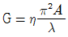
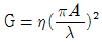
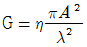
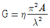
(정답률: 알수없음)
39. 다음 중 멀티미디어의 요구사항이 아닌 것은?
- 영상정보의 압축 기술 필요
- 영상정보의 실시간 전송을 위한 고속 통신망 구축
- 통합된 다중 처리를 위한 아날로그화 변환 기술의 확보
- 다량의 멀티미디어 정보 처리를 위한 대용량 저장장치가 필요
(정답률: 알수없음)
40. 다음 중 문자 다중 방송의 약자는?
- TELEX
- TELETEX
- TELETEXT
- VIDEOTEX
(정답률: 알수없음)
3과목: 정보전송개론
41. 전송선로의 무왜곡 전송조건에 대한 설명으로 틀린 것은?
- 전송대역의 전 주파수 대역에 걸쳐서 특성 임피던스가 일정해야 한다.
- 위상정수가 전송채널의 주파수에 대해서 일정해야 한다.
- 전송대역의 전 주파수 대역에 걸쳐서 감쇄정수가 일정해야 한다.
- 감쇄량 최소 조건과 동일하다.
(정답률: 알수없음)
42. BPSK의 에너지는 16진 PSK 에너지의 몇 배인가?
- 0.25배
- 0.5배
- 2배
- 4배
(정답률: 알수없음)
43. MODEM에서 T=833×10-6초의 단위펄스가 4개의 독립적인 변조파를 갖는 4위상 변복조 방식에 의하여 표시될 때 전송되는 비트수를 나타내는 데이터 신호 속도는 몇[bps]인가?
- 1200
- 2400
- 3600
- 4800
(정답률: 알수없음)
44. ASK 방식과 PSK 방식을 결합한 디지털 변조방식을 무엇이라 하는가?
- PCM
- QAM
- QPSK
- ADPCM
(정답률: 알수없음)
45. 베이직 모드의 전송제어수순에서 사용하는 전송제어문자에서 전송제어기능을 추가하는 경우를 표시하는 약칭은?
- SYN
- NAK
- ENQ
- DLE
(정답률: 알수없음)
46. HDLC 전송제어절차에서 프레임을 구성하는 각 필드의 명칭을 순서대로 올바르게 배치한 항은 어느 것인가?
- 주소 필드 - 제어 필드 - 정보 필드 - 플래그 필드 – 오류검사 필드 - 플래그 필드
- 플래그 필드 - 주소 필드 - 제어 필드 - 정보 필드 – 오류검사 필드 - 플래그 필드
- 플래그 필드 - 제어 필드 - 주소 필드 - 정보 필드 – 오류검사 필드 - 플래그 필드
- 오류검사 필드 - 주소 필드 - 플래그 필드 - 정보 필드 – 제어 필드 - 플래그 필드
(정답률: 알수없음)
47. 광섬유에 대한 설명으로 틀린 것은?
- 광대역 전송이 가능
- 손실률이 낮음
- 간섭에 강하다
- 보안성이 낮음
(정답률: 알수없음)
48. 동축 케이블의 구성 요소에 해당하지 않는 것은?
- 내부 도체
- 클래드
- 절연체
- 외부 도체
(정답률: 알수없음)
49. 다음은 PCM 통신 시스템의 블록 다이어그램이다. 각 블록에 들어갈 기능이 가장 타당하게 짝지어진 것은?
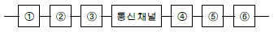
- ①표본화, ②부호화, ③양자화, ④복호화, ⑤양자화, ⑥필터링
- ①표본화, ②양자화, ③부호화, ④복호화, ⑤필터링, ⑥양자화
- ①표본화, ②양자화, ③부호화, ④복호화, ⑤양자화, ⑥필터링
- ①표본화, ②양자화, ③부호화, ④양자화, ⑤복호화, ⑥필터링
(정답률: 알수없음)
50. Start-Stop 전송 방식이라고 하며 데이터 전송시 한번에 한 글자씩 전송하는 방법은?
- 동기식 전송 방식
- 비동기식 전송 방식
- 직렬 전송 방식
- 병렬 전송 방식
(정답률: 60%)
51. 금속선로인 채널의 데이터 속도는 초당 송출 비트수이다. 채널용량(데이터 속도)과 관계없는 것은?
- 신호전력
- 잡음전력
- 채널의 대역폭(Hz)
- 선로부호
(정답률: 알수없음)
52. 정보전송 중 오류가 발생한 데이터 프레임만을 재 전송하는 방식은?
- Go-Back-N ARQ
- Stop-and-Wait ARQ
- Selective-Repeat ARQ
- Point-to-Point Protocol
(정답률: 알수없음)
53. 음성 비트(bit)를 7비트에서 8비트로 했을 때 맞지 않는 것은?
- 압축특성이 개선된다.
- 신장특성이 개선된다.
- 양자화 잡음이 반으로 감소한다.
- 표본화 잡음이 반으로 감소한다.
(정답률: 알수없음)
54. 광전송 시스템의 구성요소 중 광섬유를 통하여 전송된 광을 수신하기 위한 수광 소자에 해당하는 것은?
- 반도체 레이저(LD)
- 고체 레이저
- 발광다이오드(LED)
- 에버런치 광검출기(APD)
(정답률: 알수없음)
55. CEPT(32채널)방식을 채택하고 있는 유럽방식 PCM의 표본화 주파수가 8[kHz]일 경우 1채널당 점유되는 시간은?
- 3.9[μs]
- 5.2[μs]
- 2.048[μs]
- 125[μs]
(정답률: 알수없음)
56. 송신측에서 연속적으로 전송한 데이터 블록에 대한 에러가 검출되면 에러가 발생한 블록 이후의 모든 블록을 재전송하는 에러제어 방식은?
- 반송-N 블록(go-back-N) ARQ방식
- 선택적(selectove)재전송 ARQ방식
- 정지-대기(Stop-and-wait) ARQ방식
- 적응적(adaptive) ARQ방식
(정답률: 알수없음)
57. 음성주파수(4㎑)를 PCM방식으로 전송하고자 할 때 재생에 필요한 표본화 주기는 얼마인가?
- 25[㎲]
- 500[㎲]
- 100[㎲]
- 125[㎲]
(정답률: 알수없음)
58. 베이스 밴드 전송방식에 해당하지 않는 것은?
- 리턴 투 제로 스페이스 방식
- 폴라 방식
- 바이폴라 방식
- 위상변조 방식
(정답률: 알수없음)
59. 연결된 두 장치 간에 한번 씩 교대로 데이터를 전송하는 방식을 무엇이라 하는가?
- 단방향 전송방식
- 전방향 전송방식
- 반이중 전송방식
- 전이중 전송방식
(정답률: 알수없음)
60. 다음 그림의 전송 부호 형식은?
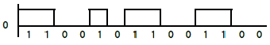
- 단극 NRZ방식
- 복극 NRZ방식
- 복극 RZ방식
- 바이폴라방식
(정답률: 알수없음)
4과목: 전자계산기일반 및 정보설비기준
61. 운영체제(OS)의 목적과 관계가 먼 것은?
- 처리능력의 증대
- 응답시간의 단축
- 신뢰도의 향상
- 응용소프트웨어의 개발
(정답률: 알수없음)
62. 전자계산기에서 보수(complement)를 사용하는 이유로 가장 타당한 것은?
- 가산의 결과를 정확하게 얻기 위해
- 감산을 가산의 방법으로 처리하기위해
- 승산의 연산과정을 간단히 하기위해
- 제산의 불필요한 과정을 생략하기 위해
(정답률: 알수없음)
63. 전자계산기의 기본 논리회로는 조합논리회로와 순서논리회로로 구분된다. 이 중 조합논리회로에 해당되는 것은?
- RAM
- 2진다운카운터
- 반가산기
- U라인(line) 안테나
(정답률: 알수없음)
64. 데이지휠(daisy wheel) 을사용하는프린터는?
- 활자식라인프린터
- 도트매트릭스프린터
- 레이저프린터
- 잉크젯프린터
(정답률: 알수없음)
65. 다음 그림은 컴퓨터의 구성을 간략히 보여준다. 빈 블록과 가장 관계 깊은 것은?
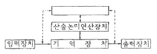
- 마이크로프로세서(microprocessor)
- 제어장치(control unit)
- 보조기억장치(auxiliary memory)
- 인터페이스(interface)
(정답률: 알수없음)
66. 다음 중 순서도를 작성하는 이유로 가장 타당한 것은?
- 시스템의 성능을 분석하기 위하여한다.
- C언어의 코딩을 생략하기 위하여한다.
- 프로그램을 작성할 경우 처리되는 자료의 흐름이 잘 이해되기 위하여한다.
- 시스템설계를 하기 위하여한다.
(정답률: 알수없음)
67. 다음의time chart 에 해당하는 것은 어느 Gate인가?
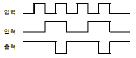
- AND
- OR
- NAND
- NOR
(정답률: 알수없음)
68. 다음 오퍼랜드어드레스방식 중에서 기억장치를 두 번 읽어야 원하는 데이터를 얻을 수 있는 방식?
- 간접어드레스지정방식
- 직접어드레스지정방식
- 상대어드레스지정방식
- 페이지어드레스방식
(정답률: 알수없음)
69. 어떠한 명령(instruction)이 수행되기 위해서 가장 먼저 이루어져야 하는 마이크로 오퍼레이션은 무엇인가?
- PC ← MAR
- PC ← PC+1
- MAR ← PC
- MBR ← 1R
(정답률: 알수없음)
70. 선형리스트 중 마지막으로 입력한 자료가 제일 먼저 출력되는 LiFO(Last in first out) 구조는?
- 트리
- 스택
- 큐
- 섹터
(정답률: 알수없음)
71. 정보통신용 회선의 블록오율을 측정하기 위한 표준신호의 블록 크기는 주로 몇비트를 이용하는가?
- 311
- 411
- 511
- 611
(정답률: 알수없음)
72. 가공으로 전기통신선을 설치시 타인의 건물 또는 구조물등으로부터 이격거리는 일반적으로 얼마이상 유지하도록 요구되고 있는가?
- 30[㎝]
- 20[㎝]
- 10[㎝]
- 5[㎝]
(정답률: 알수없음)
73. 다음 중 ITU - T에서 정의된 0㏈m 과 관련된 사항이 아닌것은?
- 1.29[㎃]
- 600[Ω]의 회선
- 1[㎽]
- 0.5[V]의 전압
(정답률: 알수없음)
74. 전기통신설비의 기술기준에서 규정한 고주파수의 정의는?
- 3400[㎐]를 초과하는 주파수
- 5400[㎐]를 초과하는 주파수
- 1000[㎐] ~ 3000[㎐]범위의 주파수
- 300[㎒]를 초과하는 주파수
(정답률: 알수없음)
75. 정보통신설비의 시설공사에서 하도급 원칙에 관한 규정이 아닌것은?
- 일괄하도급 금지
- 재하도급 금지
- 하도급 공사 단독책임
- 일부하도급시 사전서면승인
(정답률: 알수없음)
76. 다음 중 기술규격, 기준등을 동일하게 하여 통신품질 향상 및 서로 다른 기기간의 원활한 통신을 할 수 있도록 하는 것은?
- 전기통신 기술정보의 관리
- 전기통신기술의 표준화
- 전기통신방식의 효율화
- 전기통신 기술지도
(정답률: 알수없음)
77. 전기통신의 표준화에 관한 업무를 효율적으로 추진하기 위하여 설립한 기관은?
- 품질보증단
- 한국정보통신기술협회
- 한국전산원
- 한국정보통신진흥원
(정답률: 40%)
78. 정보통신장관이 전기통신을 연구하는 기관이나 단체를 지도 육성하는 목적은?
- 전기통신의 질서유지를 위하여
- 전기통신의 진흥을 위하여
- 전기통신의 기술지도를 위하여
- 정보통신망의 확충을 위하여
(정답률: 알수없음)
79. 우리나라 전기통신 행정의 주관처의 장은?
- 한국통신사장
- 정보통신부장관
- 국무총리
- 대통령
(정답률: 알수없음)
80. 전기통신역무의 요금 결정원칙에 가장 적합한 것은?
- 저렴, 명확, 신속
- 저렴, 신속, 합리적
- 공평, 저렴, 합리적
- 공평, 저렴, 차별적
(정답률: 알수없음)